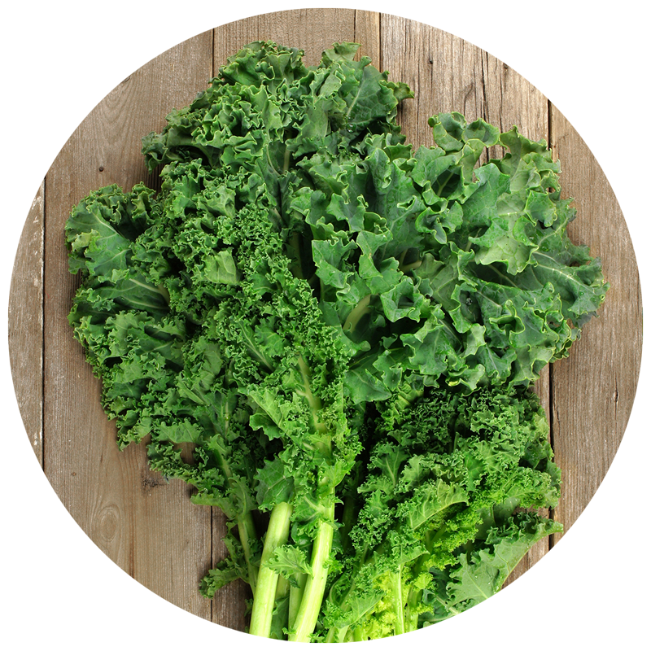
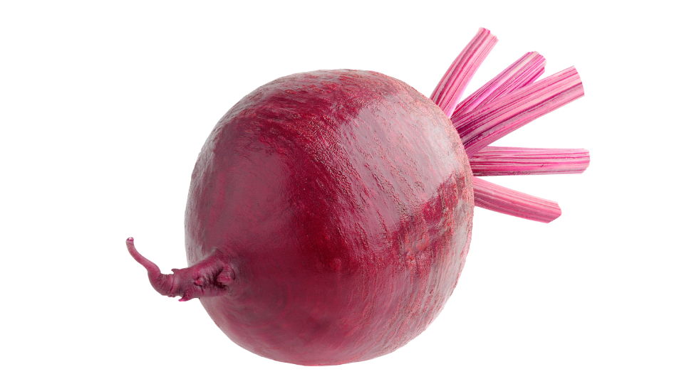

|
Name |
Health Benefit |
|---|---|
|
Broccoli 
|
There is promising evidence that a compound in broccoli (glurcoraphanin) may be useful in fighting progression of cancer. pubmed.ncbi.nlm.nih.gov |
|
Carrots |
Carrots contain a large amount of nutrients such as Potassium Vitamin A & K. fdc.nal.usda.gov |
|
Spinach |
There has been links that spinach may help in a reduction of blood pressure ncbi.nlm.nih.gov |
|
Garlic |
A study has found garlic may help in insulin resistance pubmed.ncbi.nlm.nih.gov |
|
Brussels sprouts |
Some benefits to Brussel sprouts include helping with high blood pressure & cholesterol. webmd.com |
|
Kale  |
Researchers found that in a study with mice Kale helped with your digestive health foodrevolution.org |
|
Green Peas |
Green peas are a good source of plant-based protein bbcgoodfood.com |
|
Beets  |
Beets are high in fiber & have anti-inflammatory properties health.clevelandclinic.com |
|
Asparagus |
Asparagus is packed with antioxidants and may help lower blood pressure. eatingwell.com |
|
Sweet potatoes |
Sweet potatoes may help support immune function & digestive health. bbcgoodfood.com |